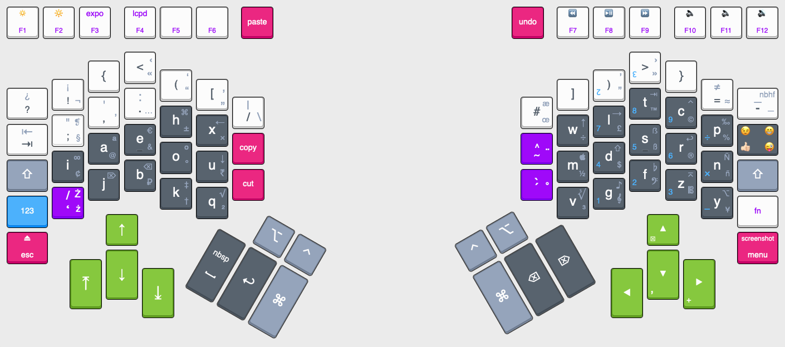

Highlights
Metrics optimized
Most commonly pressed keys are larger and easier to reach. But what are the most pressed keys? When programming we make heavy usage of arrows and modifier keys for moving the caret around, skip words and lines and use shortcuts. The only way to know this for sure, is to measure it.
This is a sample taken using WhatPulse

Characters for programming at hand.
The numbers row has been replaced by commonly used characters in popular programming languages and scripts.
No shift or other key combination required.
Just press them away like any other readily available letter.
Doesn’t get much more comfortable than that.
AZERTY and Czech QWERTZ keyboard layout invert the number row anyway to acommodate more letters.

Emoji in speed dial
Easy to type on your phone, and now on your desktop too.
Thumbs up, blink, big grim, you name it… No meme key yet though 🤔.
I’m still thinking if I make a whole layer for this or not.
Count up to 10, or a dozen
So where did the numbers go? In a dedicated layer accessible by pressing the 123 key.
0 and + are pressed more often, so they are bigger.


Are you a dozenal enthusiast? You get keys for dec ↊ and el ↋!

Mnemonic
Where did I put that darn trademark ™ symbol. Under T
of course.
And C
for copyright ©, P
for percentages % ‰, A
for @, q for sQuare ² and sQuare root √…
Technical writer?
| t | ⇥ tab |
|---|---|
| r | ↩︎ return |
| b | ⌫ backspace |
| c | ⌃ control |
| y | ⌥ option (c’mon, it does look like a y) |
Musician?
| g | 𝄞 clef | or ♪ |
|---|---|---|
| f | 𝄢 clef | â™ flat |
| z | 𝄡 clef | (nearby) |
Lawyer?
| ; | § | |
|---|---|---|
| ; | ❡ |
Copywriter or publishing designer?
|  non‑breaking space | ||
| - | — em dash | ‑ non‑breaking hyphen |
| . | … ellipsis | |
| x | × size | |
| k | †dagger (kill) | ‡ double dagger |
| o | º superscript o | ° degree |
| a | ª superscript a |
Plus “All” „the“ typographer’s ‘quotes’ ‚you‘ can get!
See more below for quotes in many languages.
Mathematician?
| x | × multiply | |
|---|---|---|
| w | ÷ divide | (nearby) |
| = | ≠not equal | |
| = | ≈ almost equal | |
| h | ± plus or minus | (nearby) |
| p | ‰ per thousand | |
| q | ² square | √ square root |
| v | ³ cube | ∛ cubic root (nearby) |
| i | ∠infinity | |
| ! | ¬ negation |
Plus “All” „the“ typographer’s ‘quotes’ ‚you‘ can get!
See more below for quotes in many languages.
Multilanguage
More keys for specific letters and diacritic marks used in many languages. ¡Cerveza Weiß and bœuf all around!

Quote in many languages beyond simplistic " " and ' '.
“ ”
“ ”
†“
†“
‘ ’
‚ ‘
« »
‹ ›

Thinking about how to support Asia Pacific scripts. It doesn’t make much sense to mix them with a latin alphabet, but maybe in a different input mode.
「 」
〠ã€
《 》
〈 〉
﹁ ﹂
﹃ ﹄
《 》
〈 〉
https://en.wikipedia.org/wiki/Quotation_mark
Currency. All mnemonic of course. Dollar $, pound L £, Euro €, Yen and Yuan ¥. Pending rupee ₹ and ruble ₽. Probably ¢ will have to go to i.
https://en.wikipedia.org/wiki/Currency_symbol
Shaped for humans
Split
Adjust the distance and as you wish. Space for your imagination in the middle.
- A trackpad,
- trackball,
- touch screen,
- 3D mouse,
- your notes,
- photograph,
- gamepad,
- cup of cofee,
- snack,
- you name it.
Ortholinear
As your fingers are.
Unless you broke them 😜


Home row
Letters you need most, effortlessly.

Thumb clusters
Large spacebars are so mechanical typewriter style. Space is still there, but in digital we delete and use shortcuts just as often.

Large arrows
We rely on them more than we notice.

♪ Living, in a material world ♪ Not!
Still on the theme of typewritters and shortcuts. You get it don’t cha?

Customizable
TODO
Full keyboard
All that in 88 keys, because diy mechanical keyboards are charged by the key.

How to build one
TODO link msp430, arduino, online 3D printing services.
Transition
And a transition layout for old school typewritter like keyboards.

How to use the layout on an old school typewritter like keyboards
TODO link layout files
Nice, but I didn’t like…
Then plan your own keyboard at http://www.keyboard-layout-editor.com/ 😁!